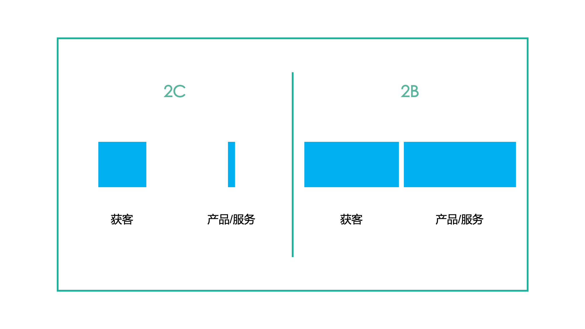
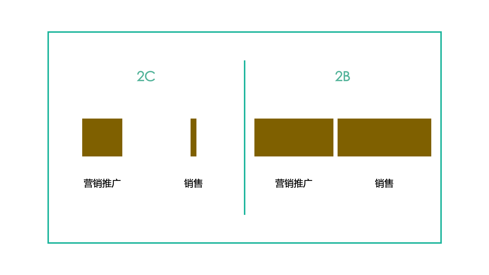
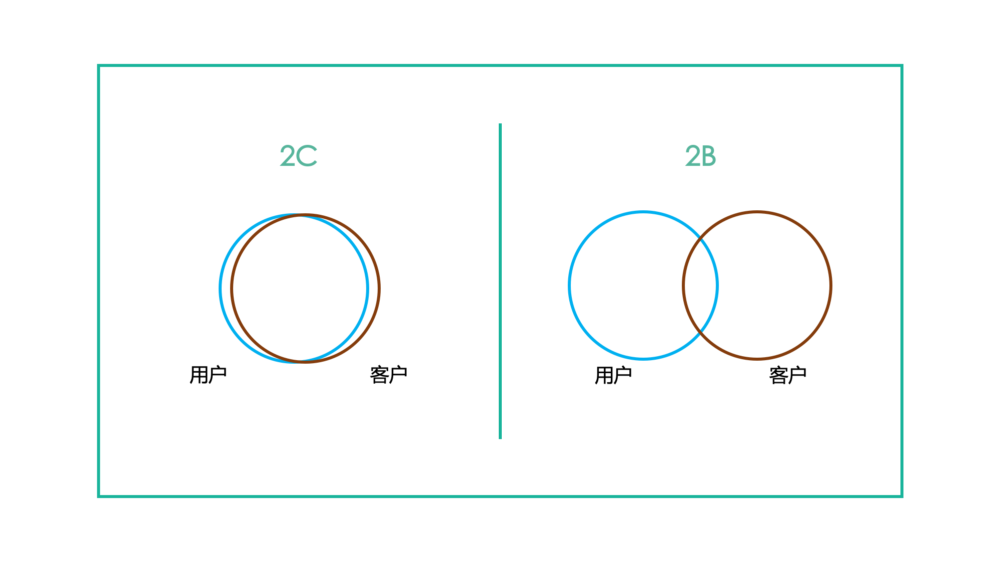
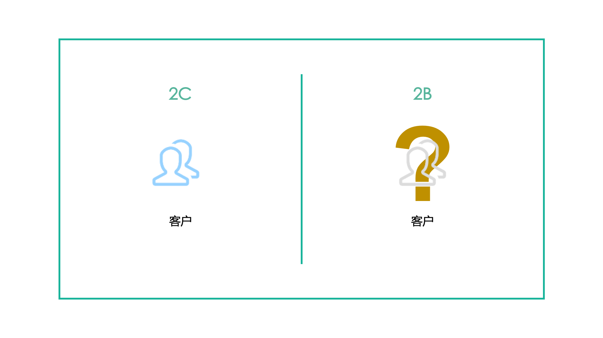
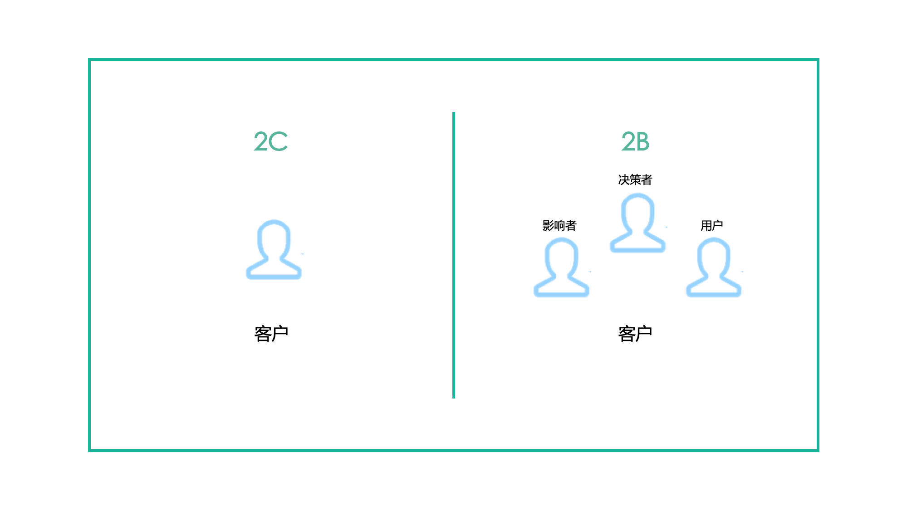
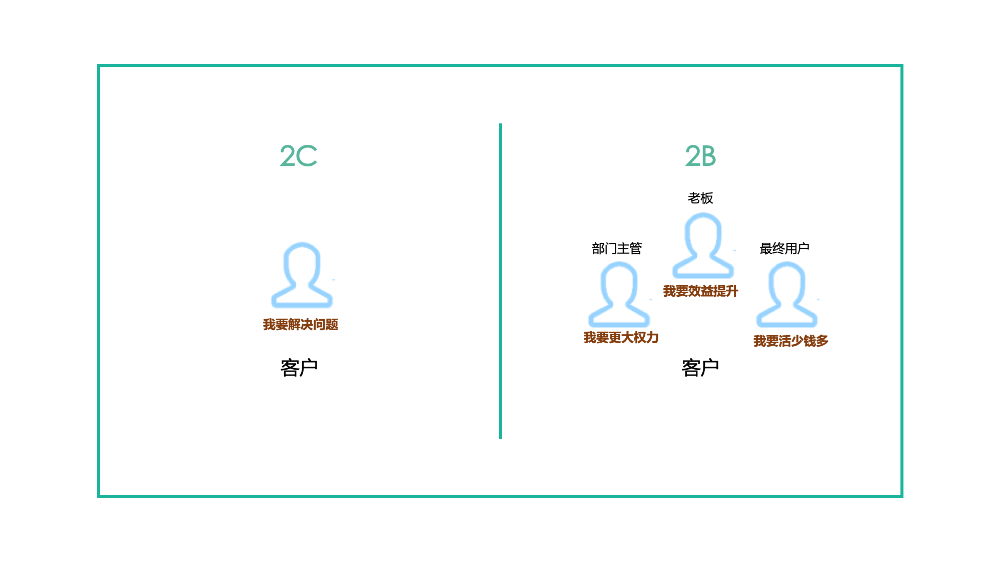
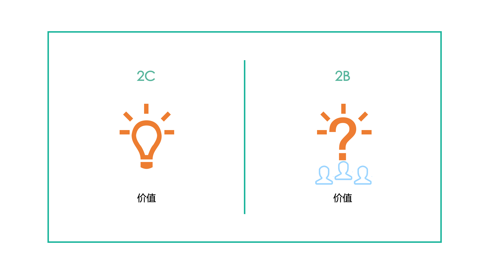
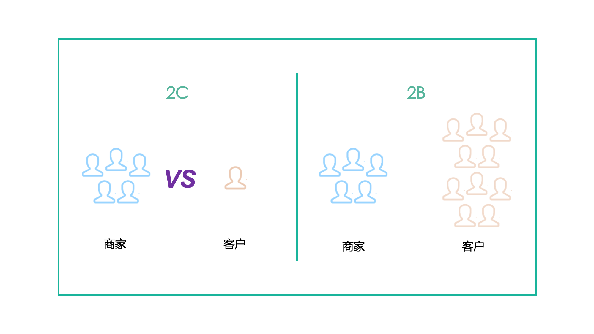

有人说，2019年是个分水岭，中国的商业由2C时代迈入2B时代。
真的是这样么？谁也说不准，世事变幻无常。
不过，2018后半年以来，很多创业者、很多机构相信：2C领域的机会已经枯竭，2B领域的机会开始崛起。
因为相信，所以看见。于是，在创投圈子里，展现出2B领域开始走向欣欣向荣的态势。
作为2B领域的长期从业者，我并不对目前的2B领域的发展态势过分乐观。
在国内商业环境下，2B领域的机会是有的，其实一直都在。现如今很多大型互联网公司，比如百度、阿里、腾讯等，它们开始起步时就是从2B领域切入的。不过，2B领域的自身行业特点，决定了它很难像2C领域的项目一样快速大规模爆发。
为什么这么说呢？因为国内2B的环境还不够成熟，既有甲方的不成熟，也有乙方的不成熟。
在国内当下的商业环境下，2B领域的项目想要快速发展增长，还面临着一系列巨大的挑战：既包括获客的挑战，还包括交付的交战。
这篇文章，重点跟大家分享有关于2B业务获客所面临的挑战。
/ 1 /
2B类的业务，即要在获客上耗费大量功夫，又要在交付上耗费大量功夫。

多数2C业务，获客之后，即能获得收益。获客后，提供产品或服务的时间很短、复杂度很低。
而多数的2B业务，获客本身更难，耗时更长；与客户签订合同，并不是直接获得收益，还要耗费很大的精力做好产品或服务的交付，交付之后，才能获得收益。
因而对2B业务而言，签订的合同额，往往与实际的销售额并不对等。
/ 2 /
2B类业务的获客，既要在市场营销推广上做大量投入，还要在销售上做大量投入。

因为多数的2C业务，特点是用户数量多，但业务流程短，其购买决策流程短，因而销售的过程很短平快或没有，只需要重点做市场营销推广。用户/客户看到你的产品，对你的产品感兴趣，可能很快购买。
而多数的2B业务，特点则是用户数量相对较少，但业务流程长，其购买决策涉及因素多，因而除了要在市场营销推广上投入大量的工作外，还需要做很专业的销售工作，才能较好的获客。
/ 3 /
2B类业务的客户与用户重合度低，容易产生矛盾。

多数的2C业务，用户和客户的重合度很高，甚至用户就是客户。用户和客户啥区别？用户是使用产品或服务的；客户是花钱买产品或服务的。
多数的2B业务，用户和客户的重合度较低。花钱买产品或服务的人，不怎么用产品或服务；而用产品或服务的，无法决定、甚至无法影响购买决策。
因而在2B的业务中，常常会出现这样一种场景：用产品或服务的人，根本不喜欢该产品或服务；而买产品或服务的人，不管用的人喜欢与否，买了就强制要用。这样的场景，对2B业务服务商，提出了挑战。
/ 4 /
判断清楚2B类业务的客户是谁，是一件困难的事情。

多数2C业务中，用户就是客户；用户/客户是谁，这个问题的答案是明确的。即使在母婴之类，用户和客户是不同的人群，客户是谁，也是十分明确的。
而在很多的2B业务中，用户是明确的，这无需多言；而客户是谁，却是一个很难一概而论、很难准确回答的问题。为什么呢？因为在2B业务中，面对的不是单个人，而是一群人的B（企业）。在企业中，可能决策购买的角色会有多个——可能是企业老板，可能是分管某块业务的副总，可能是职能部门，可能是采购部门……他们都可能是客户，也可能不是。
比如给一家工厂做生产管理的IT系统，谁负责做购买决策呢？可能是这家工厂的老板直接拍板，也可能是这家工厂的生产副总做购买决策，也可能是这家工厂的IT主管做购买决策，还可能是这家工厂的IE部门领导决定。
因而，在把你的产品卖给一家B端的客户，你需要先弄清楚做购买决策的是什么部门、什么人。而要弄清楚这一点，很难站在客户之外来判断，必须要打入到客户内部。
/ 5 /
2B类业务销售中，涉及到的利益相关者众多。

在2C业务中，用户、客户是谁很明确，只要搞定明确的客户，让TA花钱购买就可以了。
而在2B业务，你首先要弄清楚你的客户是谁，就是弄清楚谁为讨钱买你的产品做决策。原则上，你只要搞定客户就可以了。可实际上，就算你弄清楚了你的客户具体是谁，要搞定TA，也是很困难的事情。
在B端客户中，决策者做购买决定，不完全是TA一个人的意志，TA会受很多人的影响，包括决策的影响者和最终用户。
同样以给一家工厂做生产管理的IT信息系统为例，老板可以做成购买决策，但是TA不懂IT、不懂系统、不了解详细的需求，因而TA会听生产主管的意见，让IT主管的做方案和选型，还要让财务主管做个预算。生产主管、IT主管、财务主管就是决策的影响者。甚至，老板还可能因为听到办公室某个助理对某家IT系统的抱怨，从而改变自己的购买决策。
所以，在2B业务中，弄清楚了谁是做决策的客户还不够，还要弄清楚谁是决策影响者。把利益相关者理清楚之后，还要弄清楚他们之间的影响关系。借助这些影响关系和影响力，推动客户的最终决策是选择自己。
这个过程，听起来很简单么？
/ 6 /
2B类业务销售中，利益相关者的需求不同，对产品或服务的要求各不同。

客户购买你的产品或服务，最终的目的是要满足TA的需求，解决TA的问题。
对2C业务来说，客户明确而单一，需求也很明确且单一，只要产品或服务，能够满足客户需求，解决了TA的问题即可。
对2B业务来说，做个购买决策，涉及到决策者、决策影响者以及最终用户，问题就来了，他们的需求是什么呢？也许有一个整体的需求，但是在总体需求之下，不同的人有各自不同的需求。
例如老板购买你产品或服务的需求，就是要提升效益，赚更多钱。而应用该产品的部门主管，TA所关注的也许不是效益问题，而是TA在公司里的权力、影响力的问题。至于底层的最终用户，他们就希望产品或服务要好用，尽可能减少工作量，能拿更多工资。
你的产品或服务，要满足这些不同的人的众多不同的需求，很难吧？更加难的是，在你做需求调研的时候，除了老板之外，其他相关的人员的需求，往往不会直接提出来，需要你去猜测、挖掘和领会。只有弄清楚了各方的需求，照顾到方方面面，你才可能获得这家客户。
/ 7 /
如何让2B端客户感受并接受你的产品或服务的价值，是个巨大挑战。

2C业务中，商家的产品或服务传递给客户的价值是明确的，解决了客户面对的问题，满足他们的需求，价值就体现出来了。
在2B业务中，商家产品或服务传递给客户的价值难以量化衡量，更关键的是客户难以直观地感受你传递的价值。
首先，根据前面的分析，在B端客户中，不同的利益相关者有不同的需求，需要你的产品或服务的价值能够满足他们的不同需要。
其次，B端客户对2B类业务中的产品和服务的价值感知是多方面的：他们会跟没有你产品或服务时的以往业务相比较，你的产品或服务具有怎样的价值？他们会跟同类型竞品相比较，你的产品或服务具备怎样的价值？他们还会从常识或固有观念来判断，你的产品或服务是否有价值，价值够不够高？
而且，B端客户在考量你产品或服务的价值是，还会多方面考虑可能存在的风险，比如是否会过于依赖你的产品或服务，是否对他们业务带来过大的变革，是否有可能交付失败等等。
因而，让B端客户感受并接受你的产品或服务的价值，从而达成购买交易，是一件很不容易的事情。
/ 8 /
最本质的一个问题：赚聪明人或组织的钱，是一件很有挑战的事情。

拼多多上市的时候，在媒体上看到某投资人的一番高论：拼多多之所以成功，是因为一帮聪明人，去赚一帮傻子的钱，这个钱好挣。
在2C业务中，是一个商家中N多人，应对某一个具体的客户；是N多人的智慧，对单个客户智慧的碾压。宏观来讲，可以看成，一个更加聪明的人，赚相对没有那么聪明的人的钱，这个钱容易赚。
而2B的业务，则是一个商家N多人，去赚一个B端M多人的钱。一般而言，常常是N小于等于M。宏观上看，是属于一个聪明的人，去赚另一个更加聪明人的钱，或者两个人的聪明程度类似。用这样的方式赚钱，难度肯定要大很多。这就决定了2B类业务，很难是一个赚快钱的生意。
/ 9 /
除了上述提到的8点2B业务获客所面临的挑战之外，还有其他更多的获客挑战，欢迎大家留言分享出来。
获客只是2B业务的开始，在获客之后，2B业务还将面临一系列的陷阱和挑战，我们在后续的文章中做分享。